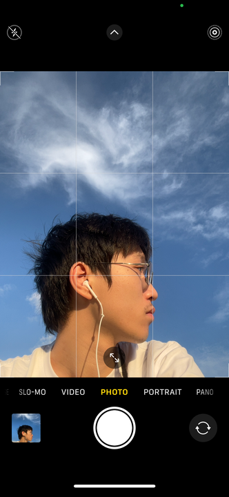

Youwen Zhang's Home Page

- SJTU Astronomy (Zhiyuan college honor program) 28'
- Email: zhangyouwen@sjtu.edu.cn;
ins
- Research interest: Art and Science, Astronomy, Philosophy of Science, Sonic Arts, Sound studies
- Hobbies: Make my own music,,,,,Skateboarding,,,sleeping/buying coffee
Youwen Zhang | FDFZ '24 -> SJTU '28 (Astro)；Skater era unlocked 09/24 (still stuck on ollies ngl). But tbh, cruising down the street + blasting music = peak freedom vibes. Term time = campus bound // Holidays = chilling @ home in Lingang. Fav combo rn: post-dinner walks w/ the squad & coffee. Finding a 10/10 album literally makes his entire day. Tho lowkey emotionally suppressed lately cuz it’s been a hot minute since his last relationship.
-
CV;
Calendar;
Paper
- Research Intern, Astronomy Research Department, Shanghai Astronomy Museum ( – Dec 2026)
- Vice President, SJTU Skateboarding Club
- President, Gravity Choir, Zhiyuan College
- Event Officer, Student Global Competence Development Association (SJTU)